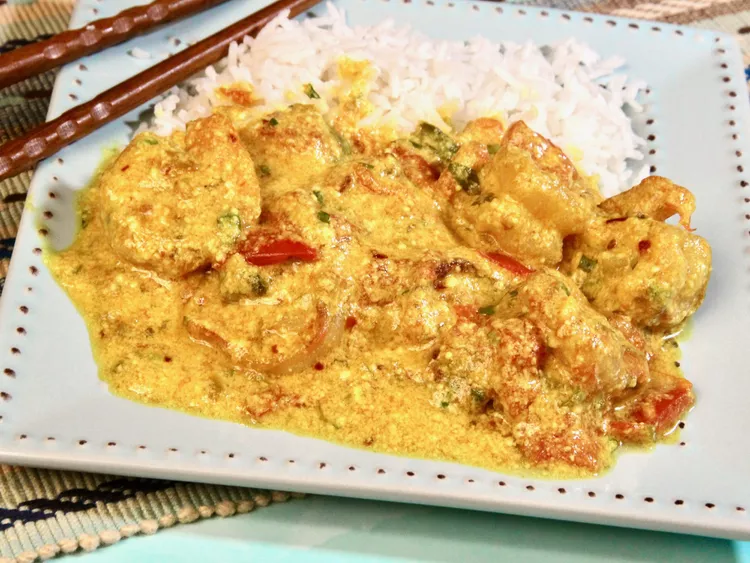

THAI STYLE SHRIMP

A dish made in half an hour! Plump shrimp are sauteed quickly and then simmered in coconut milk infused with garlic and ginger.
Serve with white rice and steamed broccoli for a luscious quick dinner.
Ingredients
- 4 cloves garlic, peeled
- 1 (1 inch) piece fresh ginger root
- 1 fresh jalapeno pepper, seeded
- ½ teaspoon salt
- ½ teaspoon ground turmeric
- 2 tablespoons vegetable oil
- 1 medium onion, diced
- 1 pound medium shrimp - peeled and deveined
- 2 tomatoes, seeded and diced
- 1 cup coconut milk
- 3 tablespoons chopped fresh basil leaves
Recipes
- Combine the garlic, ginger, jalapeno, salt and turmeric in the container of a food processor or blender.
Process to a smooth paste. Set aside.
- Heat oil in a skillet over medium heat. Add onion, and cook until translucent, stirring frequently.
Mix in the spice paste, and cook for a few minutes to release the oils.
- Add shrimp, and cook for a few minutes until pink, then add the tomatoes and coconut milk.
Cover, and simmer for about 5 minutes, then remove the lid and simmer an additional 5 minutes to thicken the sauce.
Stir in the fresh basil during the last minute of cooking.